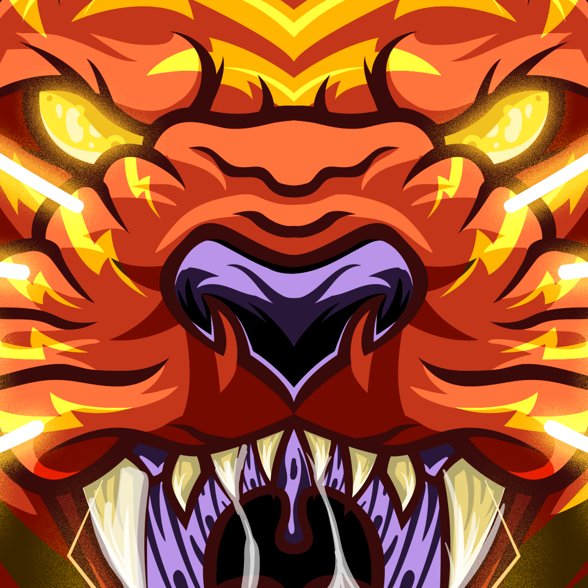
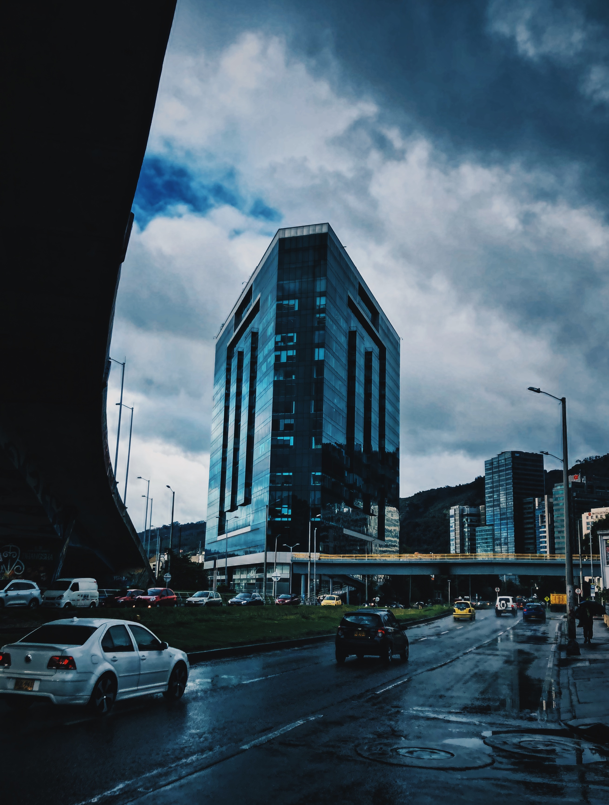
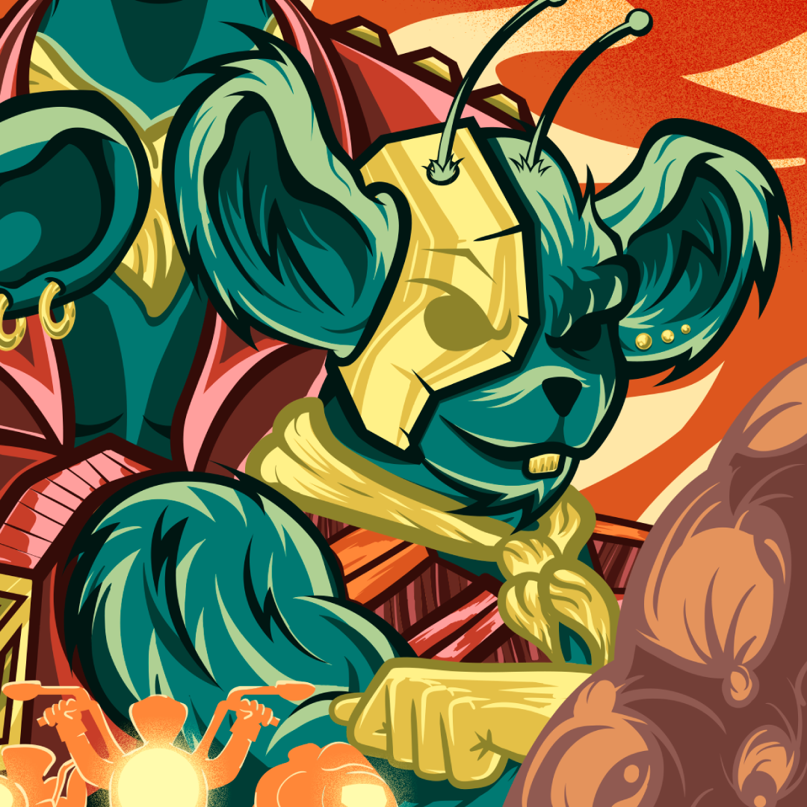
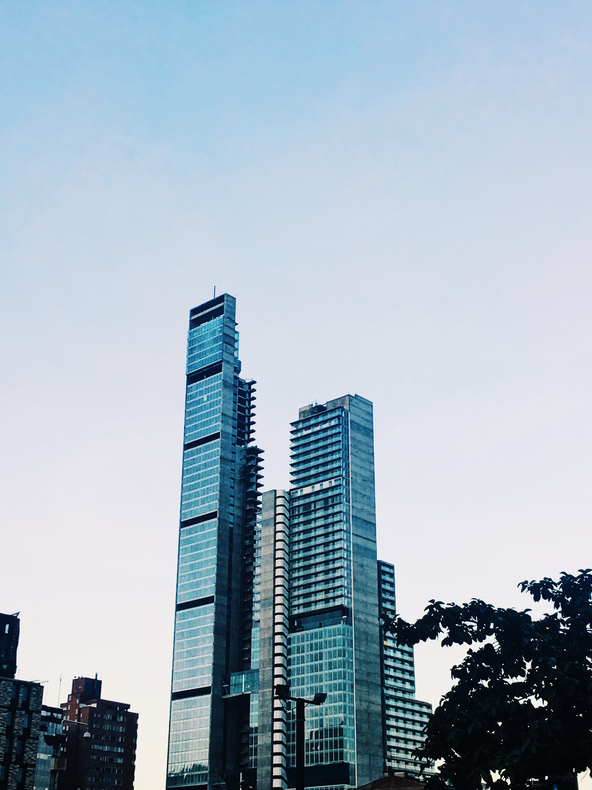
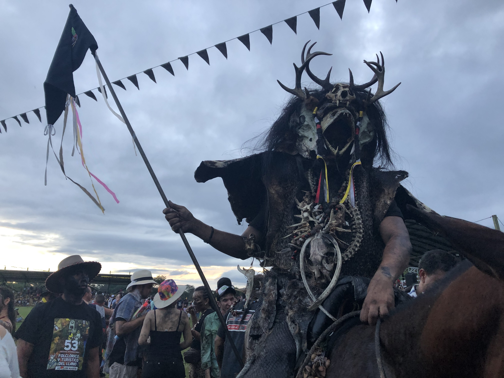
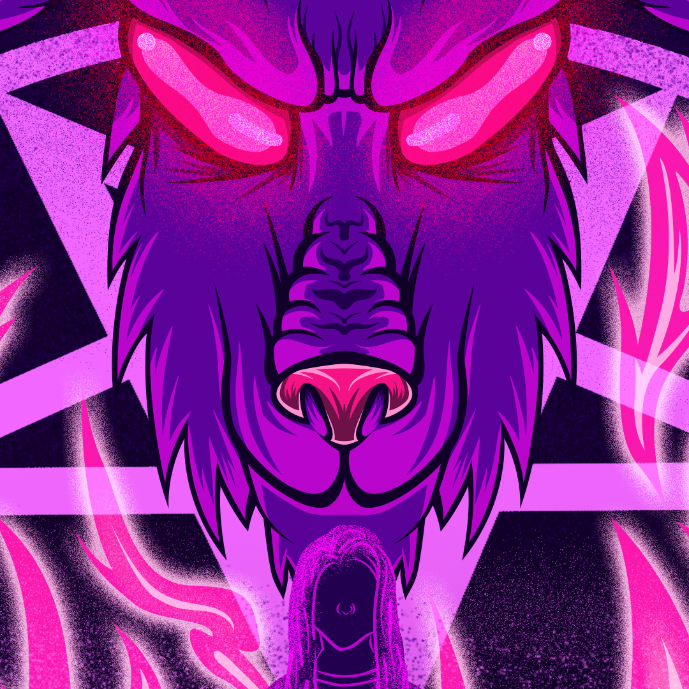

Mis proyectos
- Todos
- Ilustración
- Fotografía

Ilustración vectorial
Fan art Juan Sin Miedo

Fotografía
Calle de Bogotá parte 1

Ilustración vectorial
Motoratones de marte

Fotografía
Calle de Bogotá parte 2

Fotografía
San Martin

Ilustración vectorial
Fan art Juan Santagross